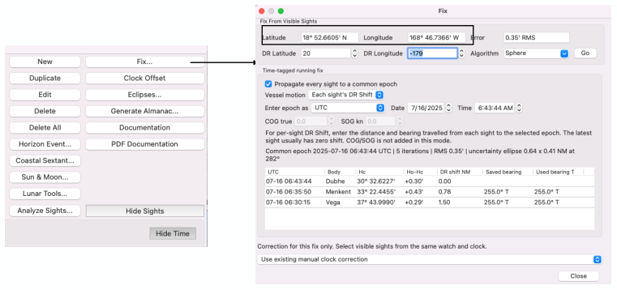

| Previous | Contents | Next |
Altitude sights and coastal navigation · Page 15 of 66
3. Fix or Running Fix (Traditional Cel Nav Method “Each sight’s DR Shift”)
Latitude and Longitude is the Fix (or Running fix) derived by the form. It is using the sights listed on the Fix form. If this is wrong, you need to change the “eyes” on the “Sights” form to include what you require.
 |
| Open illustration at full size |
DR Latitude and DR Longitude is starting point to calculate the fix. It needs to be somewhat near the position (e.g. correct hemisphere). Default is “your boat position”. If wrong, type over the Dr Lat and Lo.
Vessel motion defaults to “Each sight’s DR Shift” if DR Shift and Bearing is non zero. The sights below show the DR Shift data.
Vessel motion defaults to “One COG, One SOG” if No DR Shift data is shown. You can input COG and SOG on this form.
| Previous | Contents | Next |